EasyFly: booking a private jet
as easily as a taxi
Filip Ćorić · UX/UI Designer
Hello reader,
Have you ever wondered how people book a private jet? I had, and the answer surprised me. In most cases it still starts with a phone call to a broker, then an email with a quote, then another email with passport copies. For people whose time is the most expensive thing they own, the process is slow.
EasyFly is my personal project. I wanted to design an iOS app where a frequent private flyer can find a jet, see the full price, pay and get a boarding pass on their own, in a few minutes. In this case study I will show you how I got there.
Private flying is fast. Booking is not.
A private flight saves hours at the airport, but the booking around it is still built on people and paperwork. While mapping how it works today, I kept coming back to four problems:
Learning how the market works
This is a personal project, so I did not run interviews. Instead I studied how private flights are sold today and what people who buy them are offered. I looked at three kinds of services:
Each one solves part of the problem. Memberships give certainty but ask for a large commitment up front, brokers are flexible but slow, and most apps still end in a request for a quote. EasyFly tries to take the best of each: membership benefits without the commitment, broker choice without the waiting.
From this I wrote three goals that every screen had to pass:
Meet Marko
EasyFly is made for business owners and executives who fly privately once or twice a month, often with family, colleagues or a pet. They are used to premium service, have a little patience for forms and they expect the app to remember them. I gathered these traits into one persona.
Six screens from search to boarding pass
Before drawing any UI, I mapped every screen and every path between them. The main flow runs left to right in the middle. Around it sit the extra screens, notifications and the states nobody plans for, like a sold-out jet or a failed payment.
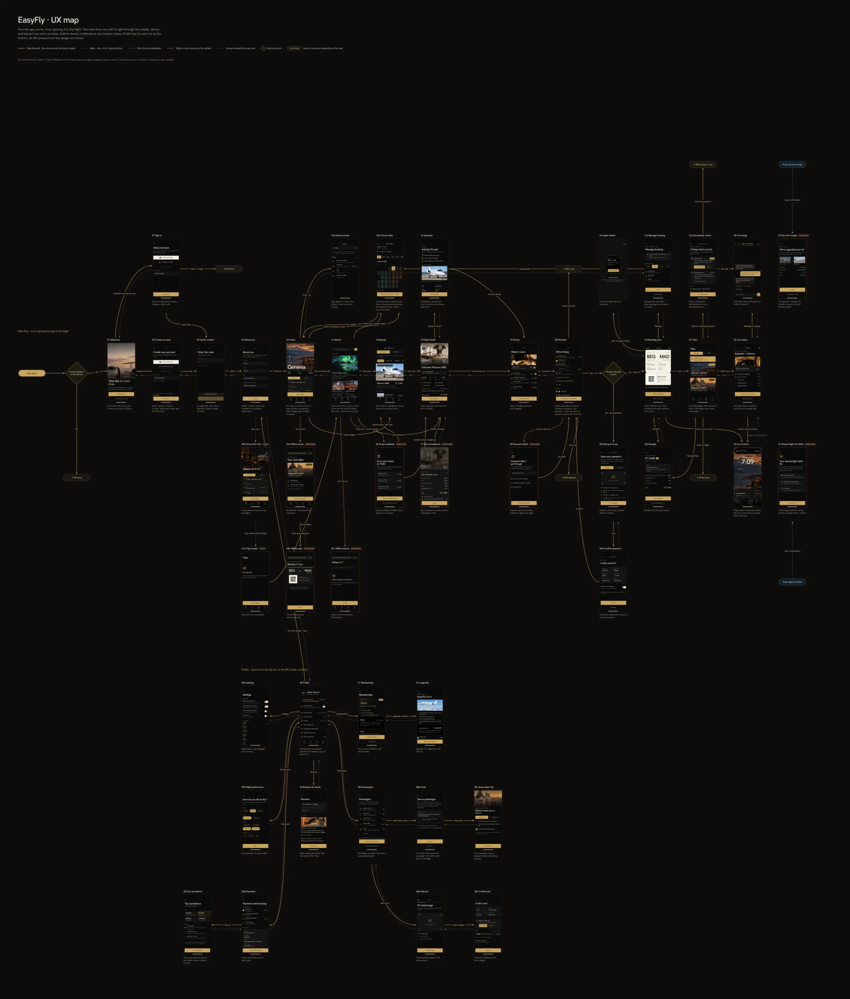
The full UX map: 48 screens in six flows.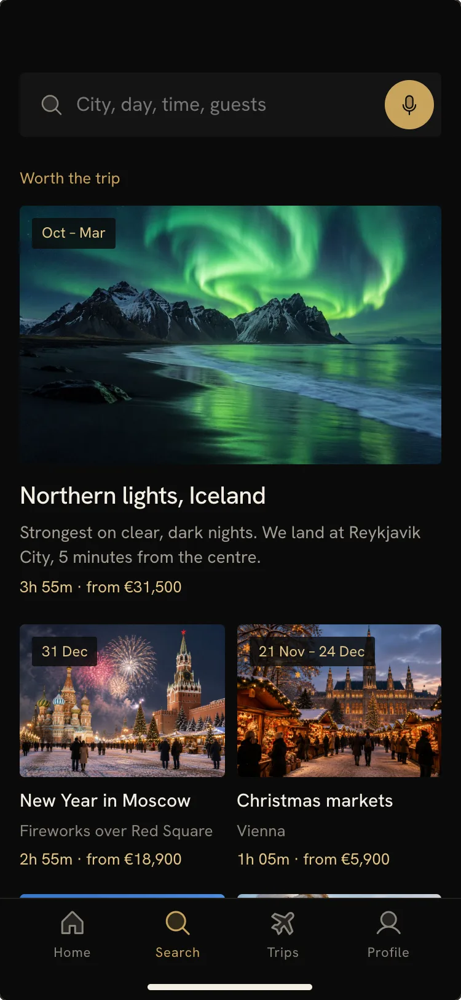
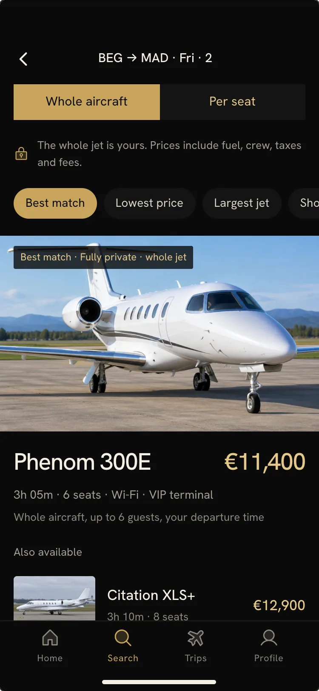
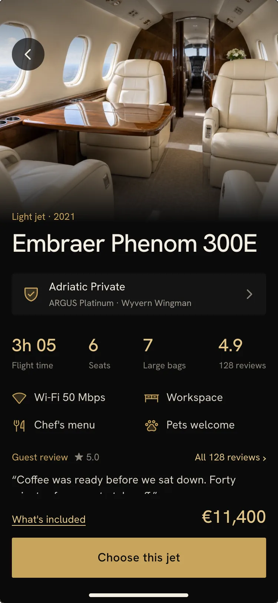
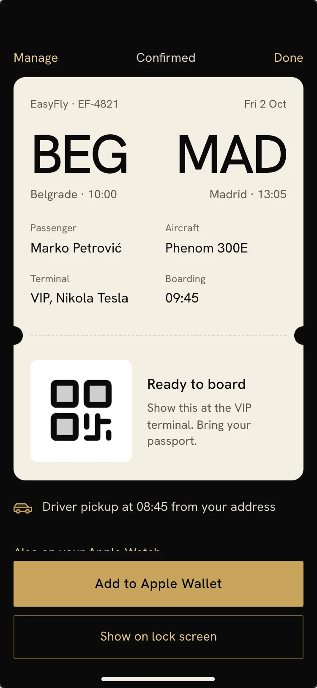
The booking itself takes six screens. I removed a few along the way: a separate “privacy level” step asked the same question as the results screen, so the choice between the whole jet and a single seat now lives in the results.
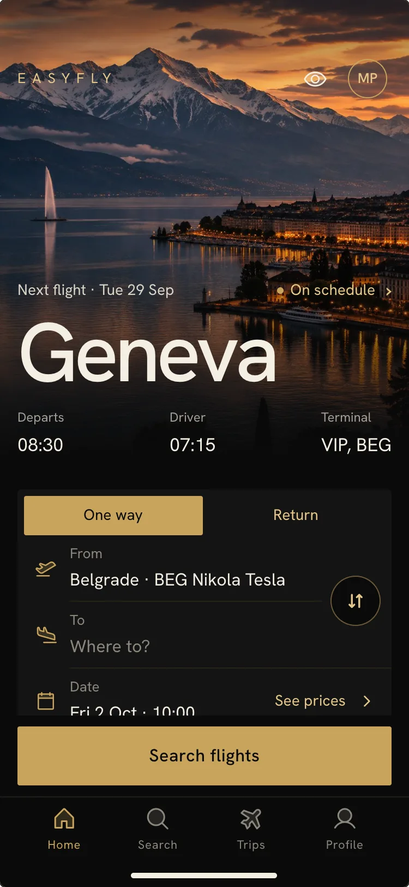
Home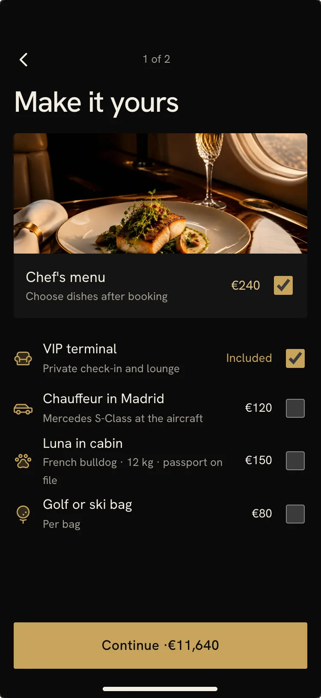
ExtrasHow the app solves each problem
Search starts on Home
Home opens with the next trip, followed by From, To and date. Typing “Paris” shows every airport in the city, so the user does not need to know the airport name. For people who would rather talk, one button takes a sentence like “Madrid, tomorrow, 2 of us”.
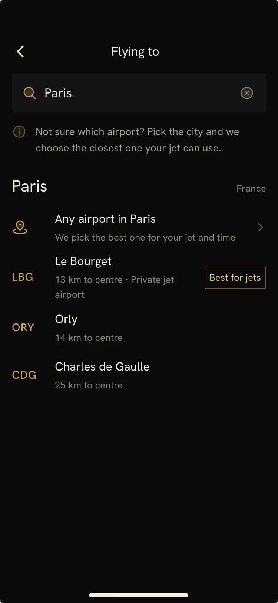
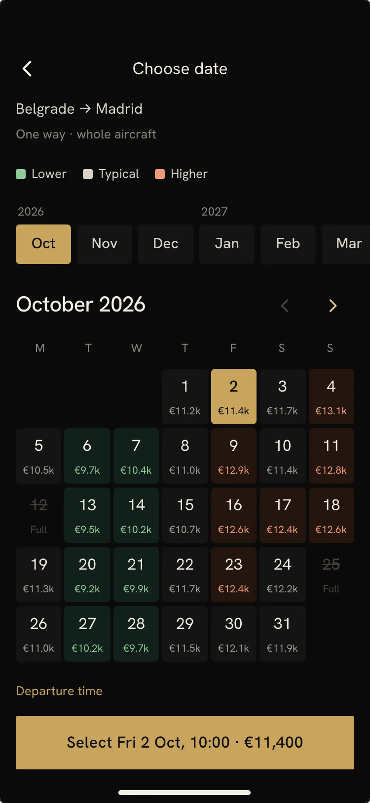
Prices you can read at a glance
The calendar colors every day by price, so cheaper days stand out before the user reads a single number. On the results screen one switch changes between the whole jet and a single seat on a shared flight, and the price always includes everything.
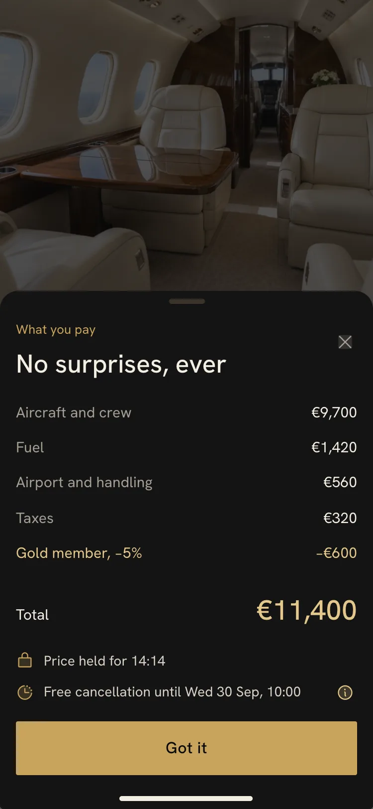
Trust before payment
Every jet shows who operates it, its safety certificates, the year it was built and real reviews. The passport is scanned only when paying for the first flight, and the app then offers to save it for next time.
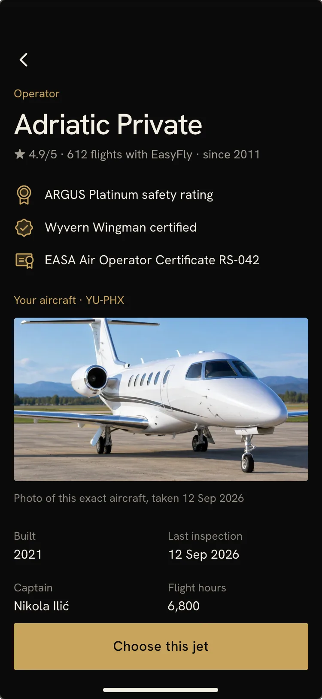
The app keeps working after you pay
The boarding pass goes to Apple Wallet and the lock screen. Before each trip the app checks every passenger’s documents for the destination and warns early if a passport is about to expire.
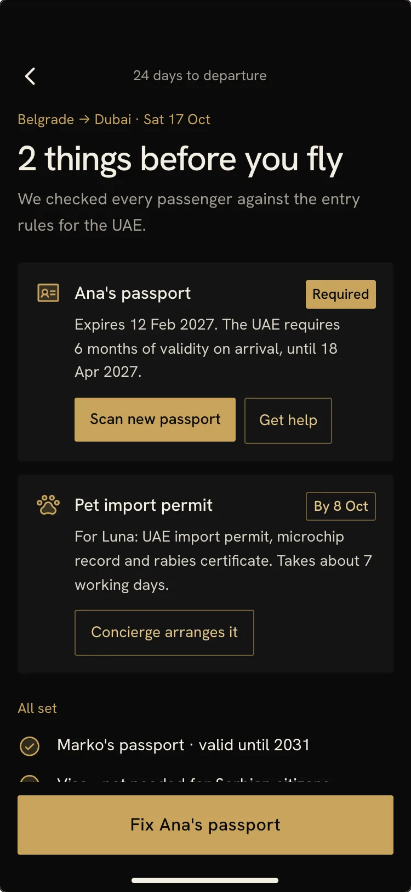
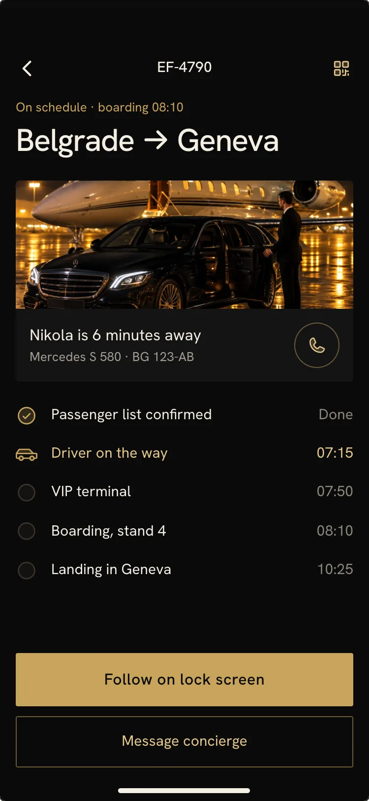
Designed for when things go wrong
No jet available, a shared flight that did not fill, a declined card, no internet. Each case has its own screen with a clear next step, and the boarding pass works offline.
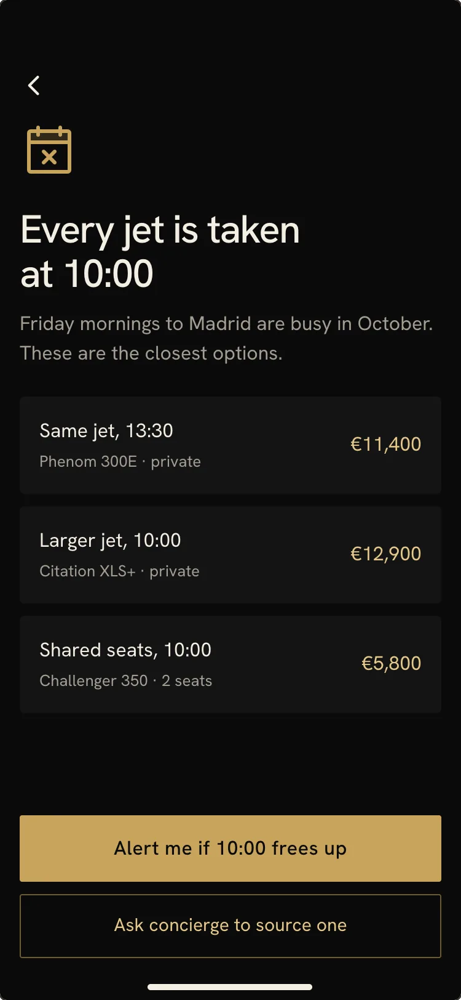
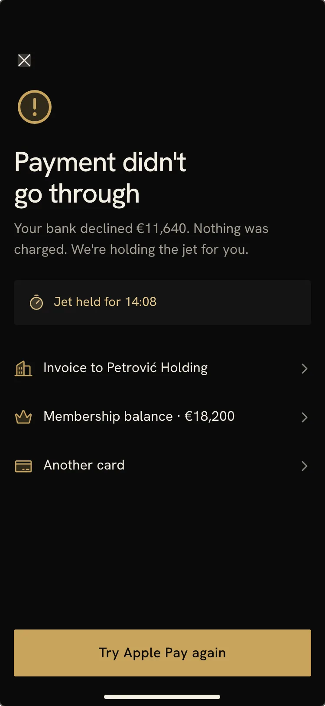
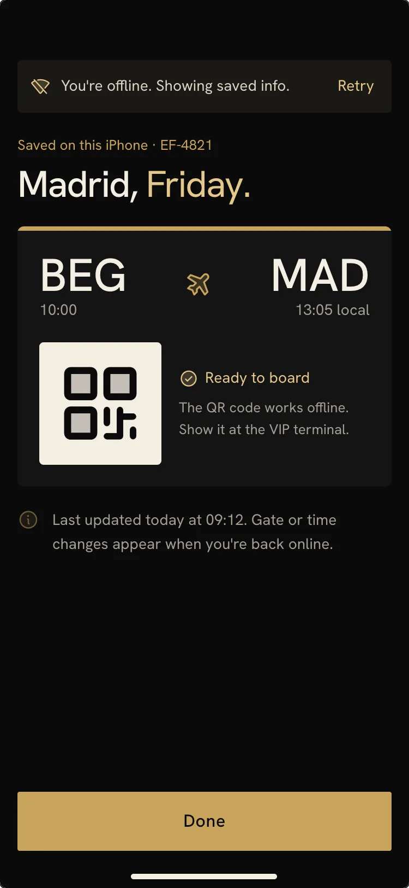
Premium without the decoration
The people using EasyFly own expensive things, and expensive things are usually quiet. I used three colors in a 60-30-10 ratio: black as the base, gold for actions and key numbers, and ivory for text and the boarding pass.
For type I chose Hanken Grotesk, a clean grotesque made for interfaces. It stays readable at small sizes and has tabular figures, so prices, times and flight numbers line up. The whole app uses only two weights, 400 and 500, and no italics or spaced-out capitals.
The layout follows the hand. I designed for the smallest current iPhone first, so nothing breaks as screens get larger: side margins stay fixed and content stretches to fill the width. Every main action sits at the bottom of the screen, right above the tab bar, where the thumb already is.
A closer look
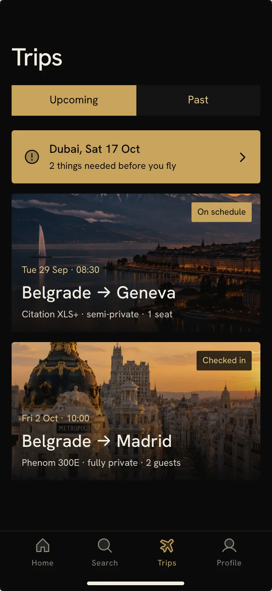
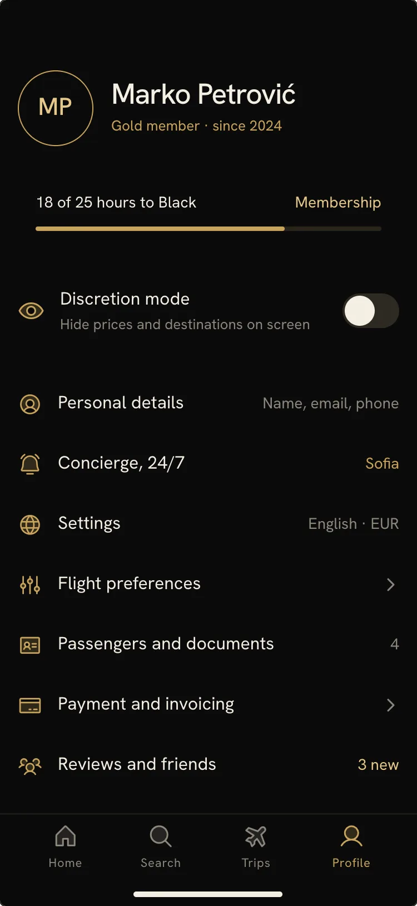
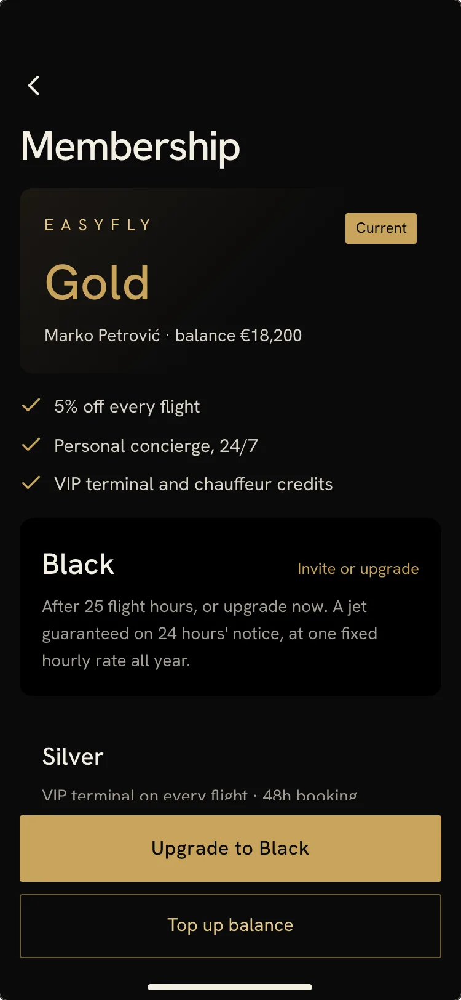
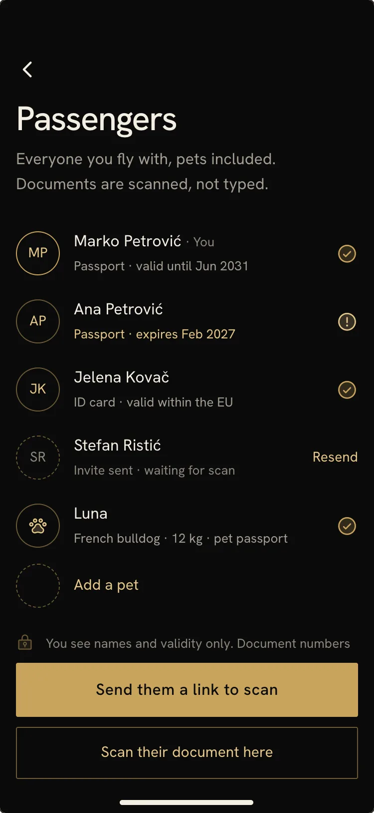